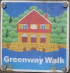
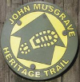
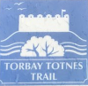
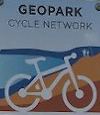

Torbay walking and cycling routes:
Downloadable GPX files for walking and cycling routes around the Torbay and South Devon area:




Geopark Cycle Network - Cockington Loop: A circular offroad cycling route around the
Cockington Valley and up to Marldon includes some nice views of Torquay and the bay. A lot of
elevation changes including some very steep sections. I am unsure of the status of route as it
seems to have been stillborn. Only fully rideable anti-clockwise as Cockington Lane is oneway
north of the village.
These GPX files are licensed under CC BY-SA 2.0.
If you like the idea of free and open source maps and geodata then please consider contributing to OpenStreetMap.